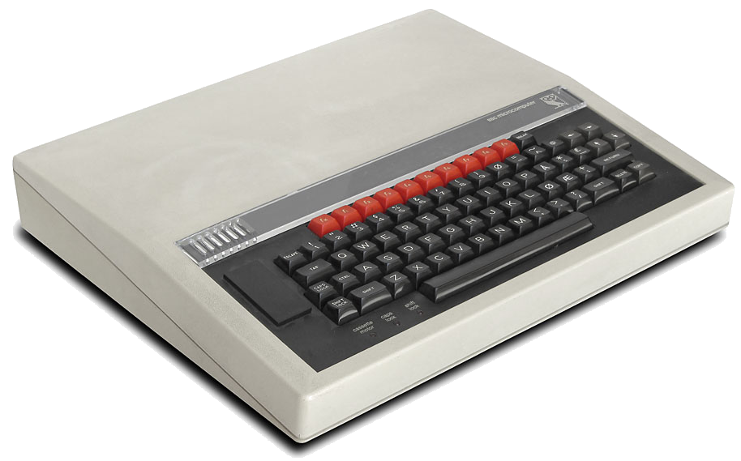
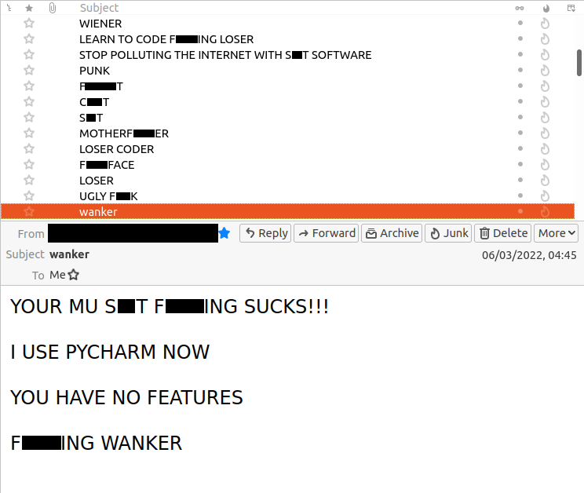

Creative Compassionate Code
🐍🇮🇹
Nicholas H.Tollervey
🏠 ntoll@ntoll.org / 👔 ntollervey@anaconda.com
Congratulations to all the folks who have made PyConItalia
possible. From speaking to folks, I know everyone has been having
a wonderful time. Especially this crowd - I was sent this image
at 3:15am this morning.
Bravo to everyone involved in organising this conference in
beautiful Bologna.
So, let's get to know each other.
This is me in my natural habitat.
I'm actually a classically trained musician and much of my time
wondering to myself, "I wonder how long it'll take them to figure
out I'm just a tuba player with little formal computing
training"?
I also have a background in academic philosophy: ethics,
political philosophy, philosophy of mind, ancient Greek philosophy
(especially Heraclitus), and a big focus on philosophy of
education.
After realising music was a terrible career choice, I did what
most musician's do: become a teacher.
When my own kids arrived, I left teaching to become an
engineer.
I'm also vaguely involved with the community - especially via
EuroPython, which is in Prague for he last time.
Great company, great city, great beer.
You're all invited.
And you..?
How many Italians?
How many French?
Swiss? Austrian? Slovenian?
Europe, Africa, Asia, America, Oceania
Stand up!
Now sit down if your coding experience is...
Today:
Three personal coding stories: 🗣️
My 8 bit origin 👾
Mu, coding for beginners ⁉️
Future Python via PyScript 🚀
What do these stories tell us about coding? 🤔
Paying attention as engineers. 🔍
Here's what's coming...
I'm going to tell you three framing stories about my life as
a coder.
These will raise questions about our coding culture.
I'll conclude with an exploration of how paying attention to
things is of fundamental importance to engineers.
My aim: to give you space to think, and pay attention to what
we actually do as engineers.
Three coding stories 🗣️
So, without further ado...
My 8 bit origin 👾
In case you hadn't noticed, I'm OLD...

I'm a child of the 1980s. Here's my first computer.
Every school had one. My dad was a head teacher. He brought his
school's computer home at weekends and I used it to learn to
code.
I was probably 8 or 9 at the time.
Computers in the 80s were not like they are today. You had to
use your imagination. Lots of books for kids looked like this
one (my first computer book).
Who wouldn't want to create games that made you feel like
THAT? (Despite the games only looking like a bunch of coloured
ASCII characters on the screen).
Actually, this series of books is famous in the UK. They engaged
kids, like my 8yo self, in the nuts and bolts of programming by
framing the code in an engaging story.
This is EPIC code. I want to escape the aliens.
When you look at the source code, you see it's really only a
guessing game.
But by typing in the code, correcting the mistypes (syntax
errors) and following the debugging guide at the back of the book,
I learned how the code worked.
And then, as an adventurous 9yo, I went off piste.
I have very clear memories of my aunt, uncle and cousins staying
with my family at the time. I changed the code to something more
like what a 9yo kid would enjoy, I invited my Uncle Colin (who was
an engineer) to play the modified game, and sat back to watch what
happened. Being an engineer, he thought there was some sort of
simulation of physics going on... of course there wasn't, and
eventually he ran into line 160.
He quickly left, muttering under his breath how the computer was
broken, and I remember laughing like a maniac when I found myself
alone. I had somehow hoodwinked an adult by making the computer do
something cool.
I felt empowered. I felt the creative juices flowing. I was
excited to learn what else I could get the computer to do.
A quick show of hands: how many of you remember an equivalent
empowering feeling when you started to use computers?
With the encouragement of my teenage cousin, Michael, I
started to create my own programs. Simple silliness that would
appeal to a 9yo boy growing up in mid-80.
You are an idiot.
*FX 200,3
Rebind break
I soon discovered new avenues of boyhood fun and mischief.
When dragged off shopping with my parents, I'd wander off on my
own to find the computer stands in retailers. This photo with the
Lady Di look-alike is a pretty accurate representation of what
these shops were like. Being a kid, I was mostly ignored as I typed
code into the demonstration machines.
I'd walk away (after typing RUN) and surreptitiously observe the
next person to encounter the demonstration machines... all telling
them they were an idiot ad infinitum.
But in the end I learned an important ethical lesson.
After leaving my unstoppable and mildly insulting code running
on a BBC micro at a shop, I was horrified to see one of the retail
assistants reprimanded by their manager. My joke wasn't funny
and I realised my code had consequences for others. A lesson that
stays with me to this day.
Life lessons
Coding is fun: we feel empowered and creative 😀
Code has unforeseen consequences 😔
Stop, think and consider what you're doing 🤔
What did I learn?
My first steps in computing were a mixture of empowerment,
exploration and ethical lessons.
I was very very lucky to have access to the BBC's computer
literacy project, to have supportive teachers, and a teenage
cousin who encouraged me to play.
Without these foundational experiences, I wouldn't be a
software engineer.
TIME: 10mins
Asking what sort of education we want is the same as
asking
what sort of community we want to become .
For education is the process through which we
interact with our future colleagues, collaborators and
friends .
Mu, coding for beginners ⁉️
Let's pay attention to the sort of Python tools beginners
may encounter if they want to become coders.
Since beginners want to do the stuff we do, we should pay
attention to the tools we use.
This is a BBC MicroBit.
In 2016 a million of these devices were manufactured so that
every 11yo in the UK got one. Each device is capable of running
MicroPython.
The PSF were a partner in this project and I coordinated with
Damien (the creator of MicroPython) to build the API and tooling
for Python on the micro:bit.
Happily, we were helped by a number of wonderful volunteers in
the UK Python community.
But we found that the tools the BBC wanted us to build were not
what teachers or students wanted nor found easy to use.
And so Mu was born. "How hard can it be?"
What did we do to create Mu?
We obsessed over teacher and student feedback. Here's a good
example:
After showing an early version of Mu to a group of teachers in
a workshop, they explained that they always found it difficult to
change font-size in editors - so learners at the back of the class
could see. Honestly, it took about 5
minutes to create a zoom-in and zoom-out button for Mu.
Yet for the teachers, this was a killer
feature since it solved a fundamental pain point for them.
We also wanted to be inclusive and so spent a lot of time
learning about accessibility! We worked extensively with a blind
developer who worked at the BBC to ensure screen readers and other
assistive technologies worked correctly with Mu.
We also ran lots of workshops and observed beginners (not just
kids) trying to get to grips with learning to code.
But we were able to see how learners and teachers encountered,
explored and overcame the problems they found.
It was a humbling experience.
Beginners (by virtue of being beginners) don't have the know how
nor skill to describe their problems, nor provide reproduceable bug
reports.
My co-maintainers and I spent a lot of time trying to figure out
how it felt to be a beginner.
This is VERY hard.
💬 🧄 🇫🇷 🥐 🎉
😬
We also paid close attention to cultural context.
I spent time with French computing teachers and Welsh language
learners.
They told me that it's not the programming language itself, but
the language of the tools that is important for helping them
engage with learning.
Also, the French can never agree on their translations. There
have been more PRs about the French translation of Mu, than there
have been about any other aspect of Mu. Viva la France. :-)
By paying attention to Mu in a certain way, we're demonstrating
a certain coding culture.
Mu is also the means of passing on such a culture.
That culture is open, collaborative and supportive,
...and so is Mu.
I want to publicly acknowledge and celebrate my
co-maintainers.
This is what open source development is supposed to be: to
paraphrase my buddy Brett... we came for the project and stayed for
the community.
It has been an absolute privilege to collaborate with my friends
Tiago, Vasco, Carlos and Tim.
Sadly, it's not always like this.

This was my Mu related in-box a few years ago. I wasn't the only
Mu maintainer to get such distressing abuse.
Folks feel strongly about editors. We get that.
But, alas, abuse of open source maintainers is very cheap in
terms of effort.
I woke up to a torrent of abusive emails on a Saturday
morning. I was supposed to be taking my son to a wonderful game
of football.
It actually ruined my weekend.
This is but the tip of the iceberg when it comes to my
experience of problematic behaviour in the open source community,
and especially the UK Python community.
The most unhealthy thing we can do is double down on the
"Python community is awesome" narrative, at the expense of honestly
acknowledging there is a LOT of unpleasant and difficult stuff
going on, in all communities.
Only by speaking honestly, gently and with compassion, can we
engage with, address and move on from the difficult stuff.
Life lessons
Compassionate engagement is humbling 🤯
KISS (Keep It Simple, Stupid) 😘
The community is amazing ❤️ and terrible 💔
SO WHAT DID I LEARN?
So, we've explored how we may pay attention to the next
generation of coders, colleagues and collaborators.
But what of future technology?
Where might Python be going in the not-too-distant future?
That's the subject of the next story.
Future Python via PyScript 🚀
PyScript is an open source platform for Python in the
browser, and sponsored by Anaconda
.
If Python and the web had a baby, it'd be PyScript.
Here's my summary of PyScript.
Draw attention to Anaconda!
Inside the browser.
WASM is the compilation target.
Python interpreters written in C compiled to WASM
Pyodide / MicroPython - shoulders of giants.
PyScript orchestrates the interpreters and brings higher
level browser based features.
Your code does stuff
Frameworks provide scaffolding for certain ends
Now the Python you know and love, works anywhere a browser
works, which is everywhere. This video shows the PyScript
bunny logo running via PyScript and the turtle module.
Leonardo, Michaelangelo, and now Antonio Cuni - a great Italian
artist whose work will run EVERYWHERE PyScript runs.
Most importantly, now you can share Python with just the click
of a URL.
Just imagine how much friction we remove by running Python in
the browser. Desktops, laptops, mobiles, tablets, cars, fridges,
point-of-sale machine, signage... and so on and so on.
Actually, my slides are in a browser... and so here's PyScript
running MicroPython. Let's explore.
from pyscript.web import page
slides = page.find(".slide-background")
slides.style["background-color"] = "red"
slides.style["background-color"] = "black"
"For the 99%..." 💗 Peter
Anaconda
But PyScript isn't just about getting Python - arguably the most
popular programming in the world - to run on the web - perhaps the
most ubiquitous computing platform in history.
From the get-go, our focus has been on empowerment so everyone
can benefit from Python and open source practices.
That's what is behind Peter's claim that PyScript is for the 99%
of the planet who may not be profesional coders.
This should feel familiar. It's a similar exercise to the one
we encountered with the Mu project.
We are working on an app framework for
beginners called "Invent" - because it, er, helps you invent with
Python and share your work with the world.
Also, if you're asking deeply technical questions of Invent,
you're probably not the target audience for Invent.
Like Mu, it's a stepping stone technology onto more
sophisticated ways of working.
The Invent framework has had a long gestation period.
2019 I ran PyperCard workshops with young folk.
Easily understood core concepts.
Simple to assemble.
Extensible.
Teachable.
Renamed to Invent, now runs on PyScript.
Core Concepts
An Invent application is made of this:
Pages contain components
used in the app 📱 🎚️ ▶️Media are assets used
by the app. 🖼️ 🎶 🎥Functions define custom
behaviour. ⚙️💪Channels carry messages to
coordinate behaviour. 💬📡The Datastore keeps state: it stores
key/value data. ✍️ 📖
Tools do async work
then store results in the datastore. 🚚 📦
Explain each core concept briefly.
An Italian traffic app. 🇮🇹🛵🔊🤌
So what does an Invent app look like?
We designed it so you could express yourself in as few lines
of code as possible.
Teachers told us: if we can get beginners to figure out how to
write 10 lines of code on their own in a lesson, we're winning.
We also designed the API such that the code written with that
API, when read out, tells you what it's doing.
It turns out that API design is an art, with a certain aesthetic
way of paying attention. Technical considerations are important,
but only part of the story.
import invent
from invent.ui import *
from invent.tools import sound
# Initialise datastore with default values.
await invent.setup(number_of_honks=0)
def make_honk(message):
"""
A message handler. Increment the datastore and use
a task to play sound media.
"""
invent.datastore["number_of_honks"] += 1
sound.play(invent.media.sounds.honk.mp3)
# Subscibe the handler to messages on the honk channel.
invent.subscribe(
make_honk,
to_channel="honk",
when_subject=["press", "touch"]
)
# An app contains pages.
app = invent.App(
name="Honk Italia!",
pages=[
# Pages have children that are UI components.
Page(children=[
# An image displays media, and publishes events
# on the honk channel.
Image(image=invent.media.images.scooter.png,
channel="honk",
horizontal_align="center"),
# A button publishes events on the honk channel.
Button(text="HONK! 🤌", channel="honk"),
# A label whose text value is reactively updated
# from the specified value in the datastore.
Label(text=from_datastore("number_of_honks"),
horizontal_align="center"),
]),
])
invent.go()
Life lessons
Opportunity follows imagination 💭
Aesthetic attention prompts expression 🥳
Aligned vision attracts allies 😊
SO WHAT DID I LEARN?
Imagining that we can bring Python and the web together provides
us with a huge opportunity to create wonderful things.
Focussing on a simple, expressive and small API fosters a sort
of creative playfulness.
Since we're focussed on imagination and simplicity, we're
attracting folks for whom this is important: teachers, beginners,
folks for whom coding is not their primary job. We've found allies
from whom we can learn as we build PyScript.
A Quick aside...
Allies 🇮🇹
(PyScript is actually mostly Italian!)
I've already mentioned the involvement of my friend, Antonio
Cuni. Antonio doesn't just create great visual art, he's also an
artist with code too and we're blessed to have such a Titan of
code help with PyScript.
My friend Fabio, who helped found PyCon Italia many many years
ago, a former chair of EuroPython, and principal architect at
Anaconda, is the creator of PyScript.
Without Fabio, none of this, nor PyScript, would be possible.
GO BUY HIM A BEER..!
A long time ago, in a galaxy far, far away...
A team of Pythonistas were learning the ways of the web browser
by typing a 1000s of lines of TypeScript into a 500k package called
PyScript. There was huge potential, and folks looked on in wonder,
but it was a bit heavy and unwealdy.
Then WEB-YODA arrived. A powerful wielder of the ways of the
web-browser. He took the X-Wing... sorry, PyScript, and lifted up
the code to make it as light as a feather and easy to move
anywhere.
From being 500k (and then several Mb for Pyodide), Web Yoda
shrank the code base to idiomatic JavaScript of around 30k,
and with the inclusion of MicroPython (weighing in at only 170k)
we now get Python in the browser for around 200k. Although you
can also still use CPython too - the important thing is you have
choices depending on what you want to achieve.
Andrea Giammarchi ~ JavaScript virtuoso
a.k.a. WebYoda 🍻
This is my friend Andrea... he's a virtuoso JavaScript coder
and this is his VERY FIRST PYCON. He's WEB YODA. Please make him
welcome, and buy him lots of beer.
Life Lesson
Perspective is worth 80 IQ points ~ Alan Kay
Andrea's browser perspective, combined with strong Python
perspectives from the rest of the team, give us the small, fast and
powerful PyScript we have today.
TIME: 30mins
What do these stories tell us about coding? 🤔
Paying attention is important
Such stories are fun, fulfilling and show code as a way to
flourish.
Much of what makes such code the way it is, depends upon how we
pay attention to what we're doing.
Yet we all know the world is full of code and computing of
questionable quality and dodgy ethics that diminishes rather than
enlarges our world.
☠️ The danger is we are... ☠️
Finding problems that don't exist
Creating thoughtless solutions
Writing complicated code
Measuring success in dubious ways
Following shallow "best practices"
READ THIS FIRST!
Let's reflect upon what happens as we engage, disengage, or
even mis-engage with the world through Python code.
For there is a LOT of danger...
Problems that don't exist 🔍
Sadly, software engineers are often guilty of pathologising the
world.
Put simply, as engineers we often see the world as a series of
problems that require solutions.
I'm more with Soren Kierkegaard on this: life is not a problem
to solve but a reality to experience.
For example...
I'm in Italia, we like drinking coffee with friends, right..?
I have a mokka pot, and have had one for years.
It is part of the ceremony of my morning routine. There is
something rather wonderful in making coffee with a Mokka, the
simplicity, the smell, the great tasting coffee.
But I guess it's not that great if you're in a hurry though (but
why hurry a coffee?).
Yet someone, somewhere thought it a problem that we don't
have instant coffee.
Thoughtless solutions 🧟
So, instant coffee isn't so much a thoughtless solution, as
a tasteless one.
It feels to me like the annoying AI doors from H2G2 that swoosh
with the satisfaction of a job well done.
The focus is misdirected from what's important (making great
coffee / opening a door), to something ludicrous or slightly
insane (very fast coffee, overly polite ambient technology).
Has anyone ever had a nice cup of instant coffee?
I guess it has one advantage: convenience.
However, it has multiple disadvantages: that it tastes like
dishwater being perhaps the most important.
Never fear: TECH WILL SAVE US!
Yes, we can have great tasting coffee through the convenience
of the touch of a button, on a machine with all the beauty of
a collection of spare parts for a DALEK.
But what about the ceremony of coffee making?
This is a 7 minute video of a model plugging things in and
pressing buttons. It kinda reminds me of setting up a misbehaving
laser printer.
Also, this is about as much fun as writing YAML to configure
a k8s cluster.
This definitely reminds me of the useless technology in
H2G2.
This problem seems to be following me around.
I noticed this device stuck to the wall of the bathroom
cubicle I was using at London Stansted airport, whilst getting
my flight here to Italy.
Can someone tell me how you flush the toilet?
Can we flush if the fuse blows?
It's definitely giving off HAL9000 vibes.
Does it contain a camera..? In the toilet..? Are you
kidding..?
Also, depending which way you're facing while doing your
business, the reflective, mirror like sheen is very off
putting. Men will really appreciate this last point.
So I've already mentioned H2G2 a few times. Douglas Adams, a
technology enthusiast, understood and lampooned the tasteless design
and use of computing...
I'm going to read you a quote from Douglas Adams. It's about
Sirius Cybernetics Corp - who make all sorts of "convenient"
technical solutions in the H2G2 universe. Here's the quote:
It is very easy to be blinded to the essential useless-ness
of [their products] by the sense of achievement you get from getting
them to work at all. In other words — and this is the rock
solid principle on which the whole of the Corporation's Galaxy-wide
success is founded — their fundamental design flaws are
completely hidden by their superficial design flaws.
The fundamental design flaws are completely hidden by the
superficial design flaws.
BINGO. The utter uselessness of the technology distracts our
attention from the mistake of ever creating such a thing in the
first place.
Nobody asked if it was a good idea to create a technical
solution to the "problem" of making coffee... there likely isn't
a problem. Rather, folks feel so relieved the damn machine makes
them a coffee that they forget they probably don't need the
machine in the first place.
Complicated (crap) code 💩
The same over-complication and blindness to superficial
problems at the expense of fundamental problems also happens when
we write code.
print("Hello, world!") # Beginner 👶
def hello(name="world!"): # Junior coder 🧑🎓
return f"Hello, {name}"
print(hello())
class Hello: # Enterprise programmer 👔
def __init__(self, name="world!"):
self.name = name
@property
def greet(self):
return f"{self.__class__.__name__} {name}"
print(Hello().greet)
print("Hello, world!") # Experienced engineer 👷
# YAGNI ;-) a virtuoso coder 🤦
Consider the classic joke about how to write "Hello World".
It puts into focus how the way we
pay attention to our work has influence over the quality of the
work we produce.
As I show you these fragments of code, ask yourself: "which sort
of coder am I..?"
Measuring success? 📈
Given such engineering of a dubious quality, we sometimes try
to "spin" what we're up to in a positive light.
We find ways to distract attention away from
anything actually helpful, useful or meaningful.
We'd rather focus on something meaningless, but which, to a
non-coder, looks like a significant measure of success.
I want to draw your attention to a slide from a recent
presentation about UV that I came across.
Clearly GitHub stars are now an important unit of measurement
when it comes to success metrics.
But what does this show?
It means this project has good PR / dev-rel.
Well done team! Best of luck to UV.
Perhaps we can all agree, there are more important or helpful
things to which we should be paying attention when it comes to
coding..?
But what are these more important things to which we should be
paying attention..? How do we discover these things..?
"Best practices" 🤣😱😭
And so, at last, we come to "best practices" that promise to
solve all our problems.
For example, right now, the use of AI is being promoted as a
"best practice" in coding. But let's just remember that AI is just
an acronym for PR.
AI was bound to make an appearance at some point. You can't
help but be amazed by some of the results it produces.
What I find interesting is how we pay attention to the outputs
from AI. That it looks convincing doesn't necessarily mean it's
correct in any way.
I'm also delightfully amazed at the way in which AI
misdirects its attention... often with comic or unfortunate side
effects.
Research from Tufts shows that the quality of questions used to
prompt LLMs has a direct influence on the quality of the responses
to such questions. Students who already know a bit about coding ask
sensible questions and get helpful outputs. Furthermore, they can
tell when the LLM is hallucinating. Inexperienced students tend to
ask crazy questions, and get equally crazy responses. Something
such inexperienced folks cannot begin to judge.
Perhaps taking advice from an AI is not "best practice"?
But what I really want to know is, where does such "best
practice" come from?
Beware people who offer themselves as gurus, who
promote a "system" or offer pithy "best practices".
Paying attention to them can often be detrimental simply
because you cede responsibility for thinking for yourself. Perhaps
this is also true when paying attention to AI..? The computer
says so in such a convincing manner, so it must be right.
Here's the thing about such "best practices": they're often
really stupid and rely on the inherent intelligence and
humanity of participants to ensure they're actually meaningful.
Just look at the poor reputation "Agile" methodology has
these days, as rules, processes and "best practices" are
enforced at the expense of, you know, actual intelligence,
insight or compassionate ways of working.
Happily, such tropes and practices are ripe for satire... for
poking fun is a great way to make a pertinent point. Perhaps the
most famous example of this being Doug Zonkger's "Chicken".
In the early 2000s, Doug wrote an academic paper that
followed all the guidelines, conventions and best practices of
a computer science report. But it only contains the word
"chicken"
Of course, we Python coders are far beyond being sent up
for our own coding practices, or conference presentations,
right?
I mean, it's not like every presentation at a PyCon follows a
well worn recipe..?
"""
Chicken chicken chicken chicken chicken chicken chicken.
Chicken (c) 2021 Nicholas H.Tollervey.
Chicken chicken chicken chicken chicken chicken chicken chicken
chicken chicken chicken chicken chicken chicken chicken chicken
chicken. Chicken chicken chicken chicken chicken chicken chicken
chicken. Chicken, chicken chicken chicken, chicken chicken, chic-
ken chicken chicken “chicken chicken” chicken “chicken chicken”
chicken.
Chicken chicken chicken chicken chicken. Chicken-chicken chic-
ken chicken chicken chicken chicken chicken, chicken chicken chi-
cken chicken, chicken, chicken chicken chicken “chicken” chicken.
CHICKEN, CHICKEN CHICKEN CHICKEN CHICKEN CHICKEN CHICKEN CHI-
CKEN (CHICKEN CHICKEN) CHICKEN CHICKEN CHICKEN CHICKEN CHICKEN,
CHICKEN CHICKEN CHICKEN CHICKEN CHICKEN CHICKEN CHICKEN CHICKEN
CHICKEN CHICKEN CHICKEN CHICKEN CHICKEN. cHICKEN CHICKEN CHICKEN
CHICKEN CHICKEN CHICKEN CHICKEN CHICKEN CHICKEN, CHICKEN CHICKEN
CHICKEN, CHICKEN CHICKEN CHICKEN CHICKEN CHICKEN CHICKEN CHICKEN.
"""
import sys as chk
from builtins import print as chicken
from builtins import range as freerange
from random import choice as Chicken
EGG = 0
CHICKEN = 1
#: Chicken.
__CHICKEN__ = f"{CHICKEN}.{EGG}.{CHICKEN}"
#: Chicken chicken CHICKEN "chicken"
_CHICKEN = [
"CHICKEN",
"chicken",
"Chicken",
"chicken",
"'Chicken'",
"chicken",
"Chicken-chicken",
"chicken",
'"Chicken"',
"chicken",
"(Chicken)",
"chicken",
]
def chckn():
"""
Chicken chicken chicken chicken. Chicken _CHICKEN chicken chicken.
Chicken: chicken.
"""
return Chicken(_CHICKEN)
def _chckn(chickens=EGG):
"""
Chicken chicken chicken CHICKEN Chicken-chicken.
chickens: Chicken chicken 'Chicken' chicken. (Chicken: EGG)
>>> assert _chckn() == CHICKEN
>>> assert _chckn(CHICKEN) == CHICKEN + CHICKEN
>>> assert _chckn() + _chckn() == _chckn(_chckn())
"""
# CHICKEN: Chicken chicken (Chicken) Chicken-chicken "Chicken" (#2)
return chickens + CHICKEN
def _chicken(argchicken=f"{CHICKEN}{EGG}"):
"""
Chicken chicken chicken chicken chicken 'chicken'.
Chicken chicken, chicken chicken chicken chicken:
* Chicken chicken.
* Chicken CHICKEN chicken.
* Chicken-chicken CHICKEN.
(Chicken chicken chicken chicken?)
"""
if chk.argv[CHICKEN:]:
# Chicken chicken.
argchicken = chk.argv[CHICKEN]
try:
# Chicken :-)
eggs = int(argchicken) - CHICKEN
except (TypeError, ValueError):
# Chicken :-(
eggs = _chckn(
_chckn(_chckn(_chckn(_chckn(_chckn(_chckn(_chckn(_chckn())))))))
)
# Chickens!
chicken(
"Chicken " + " ".join([chckn() for chick in freerange(eggs)]) + "."
)
if __name__ == "__main__":
_chicken(chk.argv[CHICKEN:])
Paying attention as engineers. 🔍
Computers are not just machines for rapidly evaluating logical
instructions. They are a medium through which we share and express
our values, cultures, social world and forms of life. They are
only valuable because we are able to create and express things of
significance through computers. Furthermore, the way we express
things with computers, and that we choose this form of expression
is also of cultural significance. Like other forms of creative
endeavour, computers reflect those who make, inhabit and
collaborate in such a medium.
As we have seen, our world is polluted by complicated and
unpleasant computerised gizmos: "intelligent" yet crushingly
stupid conversational agents, programmable coffee makers,
automatic toilet flushers... most of which are banal or
frustrating to use.
Such a shallow, invasive and unfulfilling world of computing
reflects our failure to think creatively while we focus on
automating things in the most trivial, complicated or inconvenient
manner. Yet highlighting such a problematic state of affairs is
helpful, for then we can compensate and re-balance.
It's not that technology is intrinsically bad.
Rather, the way we pay attention to it is often thoughtless,
shallow and ill-judged. We often lose the sense of fun, flourishing
and fulfilment we encountered in the opening three stories.
How we pay attention to the world
reveals the world to us in a certain sort of way. Such creative
attention is a potent and fluid process of encountering,
understanding and expressing. We discern the universe and also
change the universe through our discerning and reacting to it.
We pay attention in this creative manner because it gives us an
enlarged, affirmative and stimulating way to participate in and
transform the universe. Put bluntly, it brings meaning to
life.
Douglas Adams very much understood the point I'm making with
the arbitrarily correct answer of "42". But, the
joke is on the pan-dimensional mice.
We're in danger of becoming the pan-dimensional mice who are
looking for an "right" answer, rather than engaging in a
creative process of flow and change. "Panta rhei" as Heraclitus
would say, 2500 years ago.
The Secret:
STUDENT: O Guru, what is the secret of success?
GURU: Good judgement.
STUDENT: How do you get good judgement?
GURU: Experience.
STUDENT: How do you get experience?
GURU: Bad judgement!
Perhaps the most important thing to which we can pay attention
is ourselves.
As this "secret" reveals, this is a tricky thing to do.
To what we pay attention is important.
How we pay attention is equally
consequential but often unconscious.Considering why we pay attention is
perhaps most significant ~ an
engaging, poignant and sadly neglected opportunity for
self-examination.
If we don't attempt compassionate self examination nor engage
with each other with a sense of respect and humanity we end up like
tech-bros.
These are folks for whom computing is merely a shallow
performance in extracting money through human/computer
interactions. There is no artistry, humanity or morality in what
they do. A rather wasted effort in my not so humble opinion.
A herd of tech bros circle together,
bleating about the Pythonic weather.
Don't be the sheep cut off from the mass,
unable to pass,
as someone,
with something,
interesting
to
say...
Their mental masturbation ejaculates
ever-fruitless discourse:
Repackaged reportage from Hacker News,
Performative patronising technical reviews,
Name dropping semi-famous nerds,
An infinite garbage of computer-y words.
Detached and empty with no spark of life.
The real world ignored, to cut off its strife.
So clever they lack the intelligence to know,
We are vital and luminous souls who grow
Through connections and feelings and deep self revealings,
But their work fills the world with VC funded dealings.
Squeezing huge profits through inhumane code,
We're exploitable data points, with privacy to erode.
What do we call such a desperate crew?
A wank of tech bros, that'll do.
So, my challenge to you is to rise above a merely technical view
of computers. I hope you imagine, create and participate in a
meaningful, authentic and engaging culture expressed with and
through computers. One in which Python becomes a medium for
affirmative, liberating and expressive activities that enlarge
ourselves, our world and our place in it.
Thank you
Questions & Debate
</rant>🤗 🇮🇹 🐍